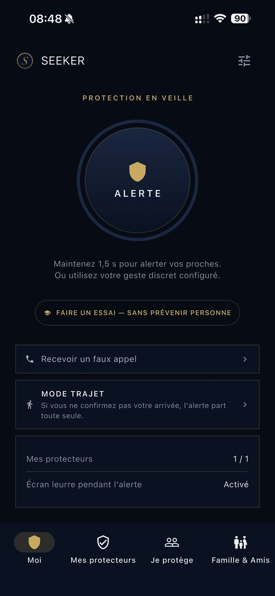
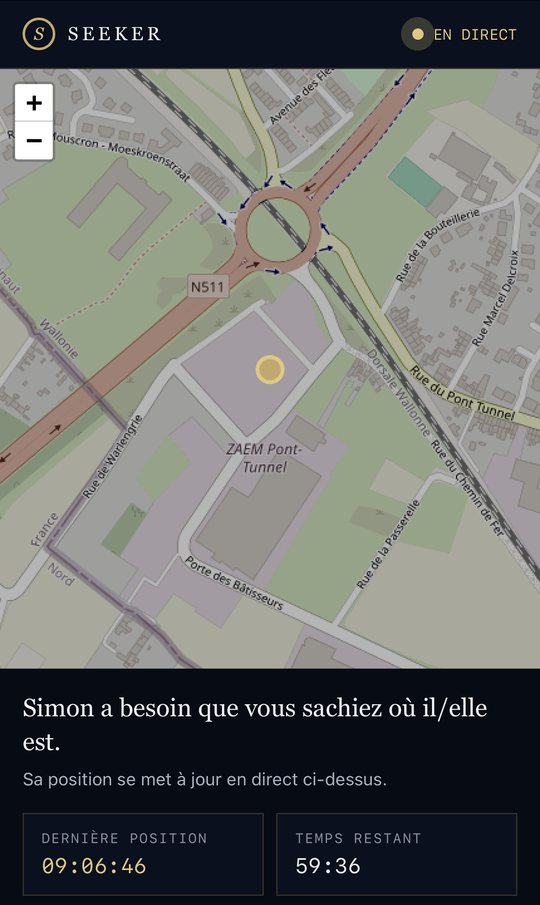
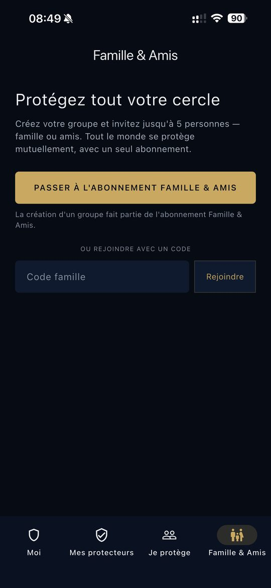

Bienvenue sur Seeker
Votre sécurité, notre priorité.
Bienvenue sur Seeker
Votre sécurité, notre priorité.
Seeker envoie une alerte silencieuse à vos contacts de confiance et partage votre position pendant une heure — sans sortir votre téléphone, sans que personne autour de vous ne le remarque.

Le bouton SOS de votre téléphone compose le numéro d'urgence. Utile en cas d'urgence médicale — inadapté quand le danger est social, ambigu, ou que vous n'êtes pas encore sûr·e.
Dans la majorité des situations à risque, dégainer son téléphone attire l'attention au moment précis où il ne faut pas.
Un appel manqué, un message ambigu — et personne ne sait s'il faut s'inquiéter, ni où chercher.
Un trajet à pied le soir. Un premier rendez-vous. Un parent qui vit seul, un ado qui rentre de l'entraînement. Rien d'alarmant — juste ce léger doute qu'on garde pour soi, parce qu'envoyer « tu es bien rentrée ? » pour la troisième fois de la semaine finit par peser sur tout le monde.
Seeker n'est pas fait pour avoir peur. Il est fait pour ne plus avoir à y penser : le jour où quelque chose cloche, un geste suffit, et les bonnes personnes savent — et savent où vous êtes.
Vous, au centre. Vos proches, autour.
Votre position, partagée pendant 60 minutes.
Envoyez le SMS ci-dessous pour prévenir vos proches et leur transmettre votre lien de suivi.
Ouvrez Seeker pour suivre sa position en direct.

Plutôt que de vous l'expliquer, on vous la montre. Touchez une étape pour la voir à l'écran : l'alerte qui part, ce que reçoivent vos proches, puis votre position qui s'affiche en direct sur une carte.
Un geste discret, téléphone verrouillé au fond de la poche — configuré une fois à l'installation — ou un appui maintenu sur le bouton d'alerte. À l'écran, une simple app météo comme si de rien n'était.
Vos proches choisis sont prévenus — pendant que votre écran reste neutre. Votre position commence à être partagée.
S'ils ont Seeker, une notification, même téléphone verrouillé. Sinon, le lien de suivi par SMS, que vous envoyez depuis l'écran d'alerte : ils n'ont rien à installer pour l'ouvrir.
Vos proches reçoivent le lien de suivi et voient votre position en temps réel.
Votre position est partagée en direct pendant 60 minutes, prolongeable si besoin, même écran verrouillé. Et avec le mode trajet, l'alerte part toute seule si vous ne confirmez pas votre arrivée à l'heure prévue.



Captures réelles de l'application.
On ne devrait jamais avoir à choisir entre vivre librement et rassurer ceux qu'on aime.
On travaille tous les deux chez Jobalto, comme Business Managers. On se connaît depuis longtemps, et l'idée de Seeker n'est pas née cette année. Elle nous est venue il y a trois ou quatre ans, à partir d'un constat tout simple : quand quelqu'un qu'on aime est quelque part et qu'on n'a pas de nouvelles, on n'a aucun moyen de savoir. Le bouton d'urgence du téléphone appelle les secours — il ne prévient pas les proches.
À l'époque, on a fait ce que tout le monde fait : on a demandé des devis pour faire développer l'application. La réponse a été plus de 80 000 euros. Pour deux salariés qui n'avaient ni fonds ni investisseur, la conversation s'arrêtait là. On a rangé l'idée dans un coin.
« On nous a dit 80 000 euros. On a fini par le construire nous-mêmes. »
Ce qui a changé, ce n'est pas notre budget — c'est ce qu'on sait faire. À force de formations, de soirées et de week-ends, on a appris à construire ce qu'on voulait au lieu de le commander. Et il y a une chose qu'on doit dire honnêtement : nos patrons y sont pour beaucoup. Ils nous poussent chaque jour à apprendre, à essayer, à créer des choses par nous-mêmes. Sans cette habitude-là, Seeker serait encore une idée rangée dans un coin.
Aujourd'hui l'application existe. Elle tourne sur nos deux téléphones, en français et en néerlandais, avec des données hébergées en Europe. Et elle n'a coûté que du temps.
C'est lui qui écrit l'application. Il s'est formé au développement pour ne plus dépendre d'un devis, et construit Seeker sur iPhone et Android en parallèle de son métier.
C'est lui qui porte Seeker vers l'extérieur. Il ouvre les portes, écoute le terrain, et teste tout ce que Simon construit avant que ça n'arrive chez vous — en parallèle de son métier, lui aussi.
Sans engagement, résiliable à tout moment. Deux mois offerts sur l'abonnement annuel.
Paiement sécurisé via l'App Store et Google Play. Prix de lancement — les inscrit·e·s de la liste d'attente en profiteront en premier.
Aucun suivi en dehors d'une alerte que vous déclenchez vous-même.
Votre position est chiffrée en transit et au repos, hébergée dans l'Union européenne.
La localisation est supprimée après la fenêtre d'alerte.
Seeker alerte vos proches, pas les secours. En danger immédiat, composez toujours le 112.
Une question qui n'est pas ici ? Écrivez-nous à contact@myseekerapp.be.
Seeker arrive bientôt sur Android et iOS. Aucun spam. Quelques e-mails avant le lancement en Belgique, l'accès aux premiers tests et le prix de lancement garanti.